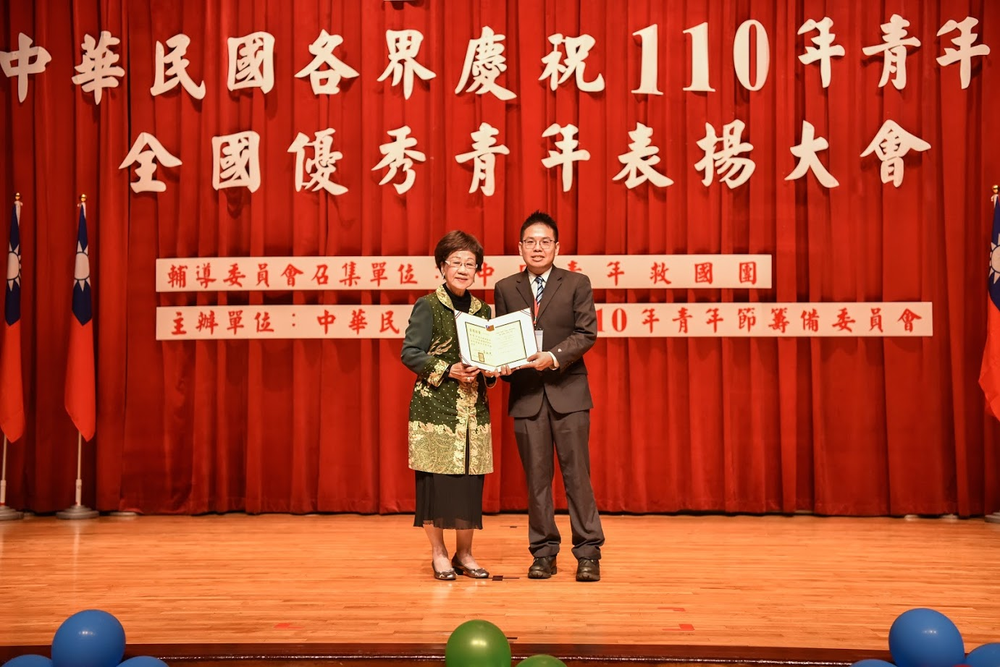
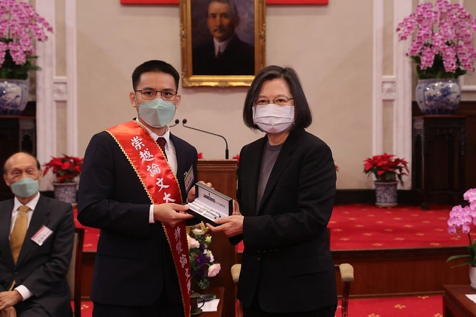
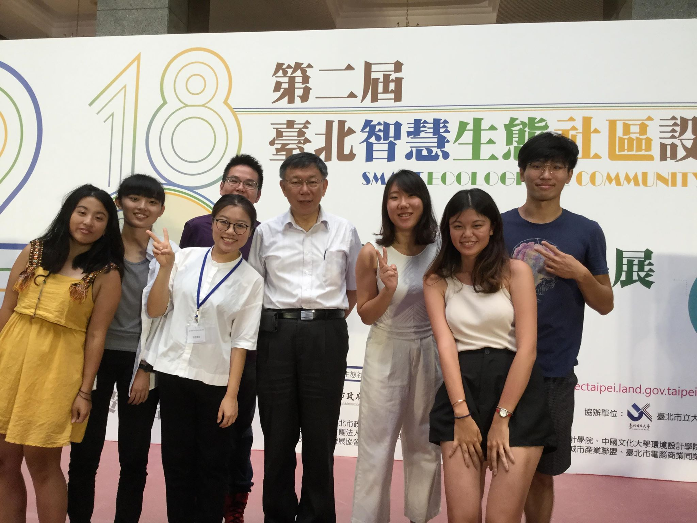
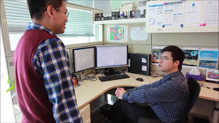

Hsun-Ping Hsieh(解巽評) is now a Professor at Electrical Engineering Department at National Cheng Kung University.
Hsun-Ping Hsieh received Ph.D. in Graduate Institute of Networking and Multimedia at National Taiwan University in June 2015.
He also received his M.S. degree in Information Management at National Taiwan University.
His research interests include Urban Computing, Social Computing, and Big Data Mining.
H.P.現為國立成功大學電機工程學系教授，喜愛「科學」更甚於「工程」，喜歡瑪莉．居禮這類跨領域又改變世界的科學家，偏愛用怪奇冷門的理論解決身邊發生的實務問題。 熱衷研究且酷愛教學，卻又有小小的創業魂。相信「新的世代不缺數據，缺的是不夠創新的思維」。H.P.指導學生的理念與訪談請見:連結
E-mail:
H.P.現為國立成功大學電機工程學系教授，喜愛「科學」更甚於「工程」，喜歡瑪莉．居禮這類跨領域又改變世界的科學家，偏愛用怪奇冷門的理論解決身邊發生的實務問題。 熱衷研究且酷愛教學，卻又有小小的創業魂。相信「新的世代不缺數據，缺的是不夠創新的思維」。H.P.指導學生的理念與訪談請見:連結
E-mail:
News
- H.P.獲國際知名學術影響力分析網站AMiner評選為近十年全球人工智慧(資料探勘領域)最具影響力百大學者，台灣唯一入選:新聞專訪(2022 Most Influential Scholar Honorable Mention in Data Mining, AMiner)
- H.P.獲110年度青年節臺灣社會優秀青年臺南市代表 
- H.P.獲得國立成功大學傑出輔導教師!(每年全校僅遴選三位):新聞專訪
- 指導學生林寰鐸榮獲2021年第十四屆崇越論文大賞碩士組-特優論文獎(938篇論文中唯一一篇獲蔡英文總統親自頒獎) 
- 指導學生參加2018臺北智慧生態社區設計競圖獲得優選並與台北市長柯文哲合照 
- 指導學生獲得2018全國大專校院軟體創作競賽銀牌並獲採訪:新聞連結
- H.P. joined the Electrical Engineering Department at National Cheng Kung University as an Assistant Professor in the Fall of 2016.
- H.P. received EIGHT Awards for his Ph.D. Dissertation.
- The video of H.P.'s intern story in Microsoft Research Asia has been published. 
- H.P.'s intern story at Microsoft Research Asia has been published for recruiting: here